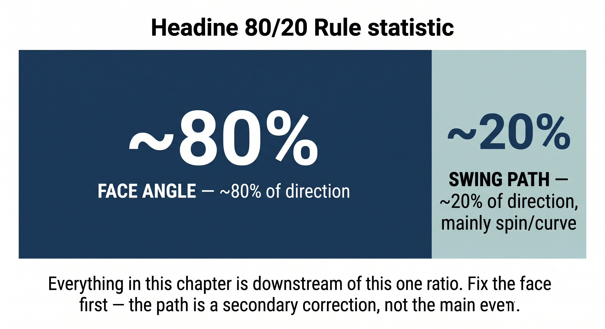
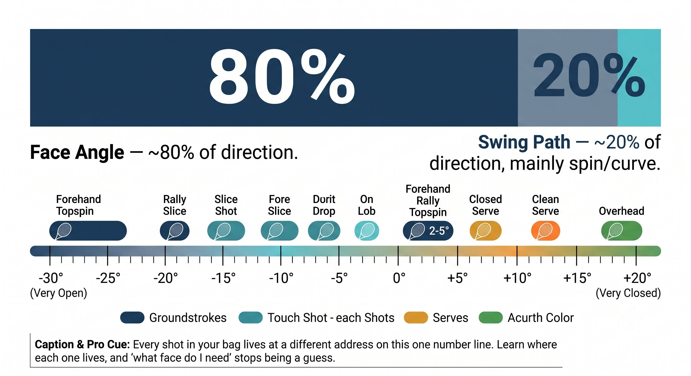
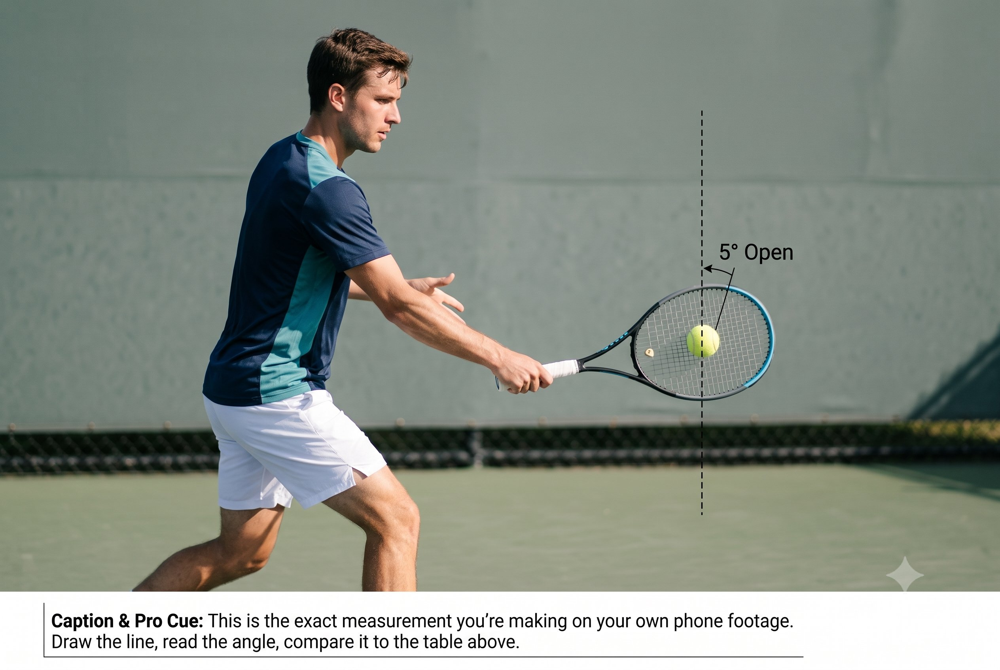
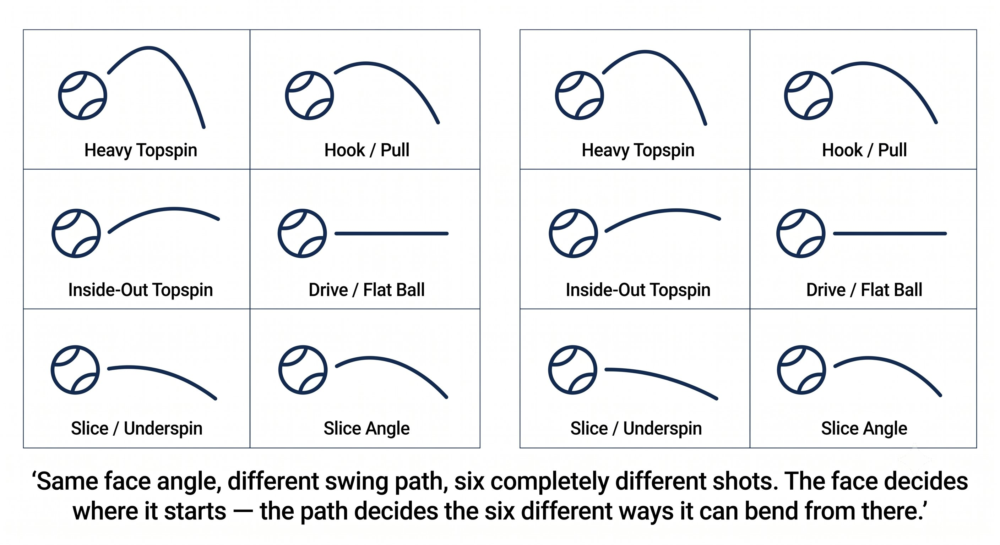

Chương 4: Kết Quả¶
Góc Mặt Vợt Tại Thời Điểm Tác Động (80% Hướng Bóng)¶
Hướng đi của bóng phụ thuộc khoảng 80% vào góc mặt vợt và 20% vào đường vung. Làm chủ mặt vợt, bạn làm chủ hướng bóng đi.
Mặt vợt phóng bóng đi. Đường vung định hình đường cong. Nhưng chính mặt vợt quyết định bóng đi đâu.
— Henry Phạm

Hình 4.1
Quy Tắc 80/20: Mặt Vợt So Với Đường Vung¶
Các nghiên cứu theo dõi đường bay của bóng — TrackMan, Hawk-Eye, video tốc độ cao — đều đi đến cùng một kết luận:
– Góc mặt vợt tại tác động quyết định khoảng 70 đến 85% hướng khởi hành của bóng.
– Đường vung quyết định phần còn lại, khoảng 15 đến 30% — chủ yếu là trục xoáy và mức độ bóng cong.
– Cả hai cùng tạo ra vectơ phóng, nhưng mặt vợt luôn là yếu tố chi phối.
– Điều này đúng cho mọi loại pha bóng: giao bóng, groundstroke, volley, đập bóng, và trả giao bóng.

Hình 4.2
Nguyên Lý Cốt Lõi¶
Nếu bạn muốn bóng đi đến đâu, mặt vợt phải chỉ đúng hướng đó tại thời điểm tác động. Mọi thứ khác chỉ là thứ yếu.
Góc Mặt Vợt Quyết Định Hướng Phóng¶
Góc mặt vợt tại tác động là biến số đơn lẻ dự báo chính xác nhất cho điểm khởi hành của bóng.
Nguyên Lý Cốt Lõi¶
Thay đổi 2 độ góc mặt vợt tại tiếp xúc tương đương với khoảng 1 mét chênh lệch ở điểm rơi tại vạch cuối sân.

Hình 4.3
Ba Cách Góc Mặt Vợt Được Tạo Ra¶
Chúng ta đã nói về hai cách đầu tiên, ở Chương 2 và Chương 3. Cách thứ ba là một kiểu đền bù mà không ai nên dựa vào:
Quy Tắc¶
Cách 1 và Cách 2 là hệ thống thật sự của bạn. Cách 3 chỉ là miếng băng dán tạm thời. Nếu bạn thấy mình dùng Cách 3 thường xuyên, hãy quay lại sửa Cách 1 hoặc Cách 2.
Góc Mặt Vợt Theo Từng Loại Pha Bóng¶
Mỗi loại pha bóng đều có một cửa sổ góc mặt vợt bắt buộc riêng tại thời điểm tác động.

Hình 4.4
Cách Kiểm Tra Góc Mặt Vợt Của Bạn Tại Tác Động¶
Bạn không thể thực sự nhìn thấy góc mặt vợt ngay tại khoảnh khắc tiếp xúc. Nhưng bạn có thể kiểm tra nó một cách gián tiếp, theo nhiều cách:
– Đường bay của bóng nói lên sự thật: bay dài nghĩa là bạn đang mở, vào lưới nghĩa là bạn đang khép, thẳng nghĩa là bạn đang trung lập.
– Độ xoáy nói lên sự thật: topspin nặng nghĩa là bạn đang khép, bóng bồng bềnh nghĩa là bạn đang mở, slice nghĩa là bạn đang mở.
– Cảm giác tiếp xúc: cú đánh sạch nghĩa là mặt vợt khớp với đường vung; rung hoặc sốc tay nghĩa là mặt vợt bị xoay lệch tại tác động.
– Xem lại video: quay video điện thoại 240 khung hình/giây từ bên hông. Dừng hình đúng lúc tác động. Đo góc mặt vợt so với phương thẳng đứng.

Hình 4.5
– Drill đánh tường: đánh bóng vào tường. Bóng về ở cùng độ cao = mặt vợt trung lập. Về cao hơn = bạn đang mở. Về thấp hơn = bạn đang khép.
Mẹo Huấn Luyện¶
Đừng đoán mò. Hãy quay video 10 cú forehand từ bên hông ở tốc độ 240 khung hình/giây. Dừng hình đúng lúc tiếp xúc. Kẻ một đường trên màn hình để đo góc mặt vợt. Bạn sẽ thấy ra quy luật chỉ trong 5 phút.
Góc Mặt Vợt So Với Đường Vung: Sự Cong Của Bóng¶
Đường vung làm bóng cong sau khi đã phóng đi. Góc mặt vợt mới là thứ phóng bóng đi ngay từ đầu.
Nguyên Lý Cốt Lõi¶
Mặt vợt phóng bóng. Đường vung tạo độ cong. Nếu điểm phóng sai, độ cong không thể cứu được cú đánh.
Danh Sách Kiểm Tra Góc Mặt Vợt¶
Góc mặt vợt tại tác động = mặt vợt cơ bản của cầm vợt + độ dịch chuyển điểm tiếp xúc + phần bù bằng cổ tay (hãy giữ phần này càng gần không càng tốt).
MẶT VỢT PHÓNG BÓNG. ĐƯỜNG VUNG TẠO ĐỘ CONG. ĐÔI CHÂN ĐỊNH VỊ TIẾP XÚC. CẦM VỢT THIẾT LẬP NỀN.
Những Điều Cần Nhớ¶
– Nắm rõ góc mặt vợt bắt buộc cho loại pha bóng của bạn (xem bảng ở trên).
– Chọn cầm vợt sao cho điểm tiếp xúc lý tưởng của bạn khớp với góc mặt vợt cần thiết.
– Di chuyển chân để đưa bóng vào đúng vùng tiếp xúc lý tưởng đó.
– Giữ cổ tay thụ động — để cầm vợt và điểm tiếp xúc tự tạo ra góc mặt vợt cho bạn.
– Kiểm tra qua đường bay của bóng: bay dài nghĩa là bạn đang mở, vào lưới nghĩa là bạn đang khép, còn tốt nghĩa là bạn đã đúng.
– Nếu bạn thường xuyên phải dùng cổ tay để sửa mặt vợt, hãy đổi cầm vợt hoặc điểm tiếp xúc thay vì cố sửa bằng cổ tay.
Chương Này Dẫn Đến Đâu¶
Chương này thiết lập biến số KẾT QUẢ trong phương trình CORE. Chương 5 và 6 sẽ nói về hệ thống NĂNG LƯỢNG — Kéo vợt ra sau và độ căng cơ — thứ cấp năng lượng cho việc truyền tải đó. Chương 7 sẽ tích hợp Sân cộng Bóng thành Góc Mặt Bắt Buộc, rồi Cầm Vợt cộng Điểm Tiếp Xúc cộng Kéo vợt ra sau cộng Độ Căng Cơ, vào trọn vòng lặp CORE.
←Chương TrướcChương 3: Sự Chính XácChương TiếpChương 5: Kho Năng Lượng→